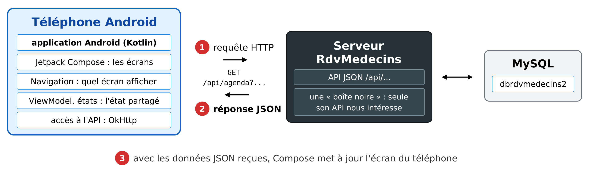

1. Introduction
Le PDF du document est ICI.
Les codes du document sont ICI.
Ce document est un produit de l'IA Claude d'Anthropic. Il reprend le cours Introduction étape par étape au framework mobile Flutter - son plan, ses 25 exemples, son serveur et son étude de cas - et en change l'outil :
- dans le cours [Flutter], l'application est écrite en [Dart], avec un framework qui dessine lui-même chaque pixel de l'écran, et le même code produit une application [Android], [iOS] ou web ;
- dans ce cours, l'application est une application [Android] NATIVE, écrite en [Kotlin] (le langage recommandé par Google pour Android depuis 2019), avec [Jetpack Compose], la bibliothèque d'interface déclarative d'Android.
Le serveur, lui, ne change pas : c'est le serveur JSON [RdvMedecins] écrit avec [NestJS], déjà utilisé par les clients React, Vue.js, Angular et Flutter. Et les écrans sont ceux que les lecteurs de ces cours connaissent : connexion avec captcha, agenda d'un médecin, fenêtre de réservation, espace du patient, gestion des médecins et des clients, création d'un compte, français et anglais.
Les 25 exemples portent les mêmes numéros que ceux du cours [Flutter] (et des cours React, Vue.js et Angular) : le lecteur qui connaît l'un de ces frameworks retrouvera chaque notion à sa place. Quand une notion de [Flutter] n'a pas d'équivalent direct dans [Compose], l'exemple montre la façon de faire d'[Android] (un formulaire écrit avec des classes ordinaires, des ressources [strings.xml] pour les textes, des liens profonds plutôt que des adresses web...).
Un cours existe déjà sur ce sujet : Un exemple de client / serveur - Kotlin Android / NestJS (2026), qui présente d'emblée un client complet. Le présent document s'en distingue par sa démarche : on apprend [Compose] pas à pas, par de petits exemples, avant de s'attaquer au client complet ; et le serveur y est une boîte noire, dont seule l'API JSON nous intéresse.
Les bases du langage [Kotlin] (classes, data classes, nullabilité, lambdas, fonctions d'extension, collections) sont supposées connues : elles sont présentées dans le cours Kotlin. Les traits du langage qui servent particulièrement à [Compose] (fonctions en paramètres, lambdas finales, délégation [by], interfaces scellées, coroutines) sont rappelés au fil des exemples, au moment où ils servent.
L'IA Claude a écrit tous les codes, les a compilés et exécutés sur un émulateur [Android], sur le poste du réviseur et avec son accord ; les copies d'écran ont été prises pendant ces exécutions.
1.1. La place d'Android et de Compose dans une application client / serveur
L'application a deux parties, qui ne se parlent que par des requêtes HTTP :

- 1 : l'application [Android], exécutée par le téléphone, envoie une requête HTTP au serveur, par exemple [GET /api/agenda?idMedecin=1&jour=2026-10-05] ;
- 2 : le serveur répond par des données JSON : l'agenda de ce médecin, ce jour-là. Il ne fabrique aucune page ;
- 3 : avec ces données, [Compose] met à jour l'écran du téléphone.
C'est exactement l'architecture des clients [React], [Vue.js], [Angular] et [Flutter] : seul change ce qui fabrique l'affichage. [Jetpack Compose] repose sur les mêmes idées que [React] et [Flutter] :
- l'écran est décrit par des FONCTIONS : une fonction annotée [@Composable] décrit un morceau de l'interface (un texte, un bouton, une colonne, un écran entier) en appelant d'autres fonctions [@Composable]. Elles forment un arbre ;
- l'interface est une fonction de l'état : quand une donnée observée change (un « état », [mutableStateOf]), [Compose] réexécute les fonctions qui la lisent - c'est la RECOMPOSITION - et met à jour l'écran. On n'écrit jamais de code qui modifie l'écran : on décrit l'écran en fonction de l'état ;
- un langage moderne, [Kotlin], compilé pour la machine virtuelle d'[Android] : ses lambdas, ses fonctions d'extension et ses coroutines rendent ce style d'écriture naturel.
Contrairement à [Flutter], [Compose] est propre à [Android] (une variante, [Compose Multiplatform], existe pour d'autres plateformes, mais elle n'est pas étudiée ici). En contrepartie, l'application est une application [Android] « comme les autres » : elle utilise directement les bibliothèques de Google ([Jetpack]) et les services du système (langue de l'application, cycle de vie des activités, gestionnaire de mots de passe...).
Comme [Flutter], [Compose] n'est pas un framework « à tout compris » pour le dialogue avec un serveur : le client HTTP, la navigation, l'état partagé sont fournis par des bibliothèques. Ce cours utilise celles que recommande Google ([Jetpack] : Navigation, ViewModel, DataStore, AppCompat) et les bibliothèques les plus répandues de l'écosystème [Kotlin] ([OkHttp], [kotlinx.serialization]).
1.2. Les outils utilisés
Les exemples ont été écrits et testés avec les outils suivants :
- [Android Studio] (version Quail 2026.1), l'environnement de développement de Google : éditeur, SDK [Android], émulateur. Il contient son propre JDK (le [JBR] 25), qui sert à [Gradle] ;
- [Gradle] 9.6 et le plugin [Android] (AGP) 9.4, qui compilent l'application. Le plugin [Android] 9 intègre lui-même la prise en charge de [Kotlin] 2.2 ;
- un émulateur [Android] (un Pixel 8, [Android] 17, API 37) ou un vrai téléphone [Android] relié à l'ordinateur ;
- le SGBD [MySQL] (ou [MariaDB]), par exemple celui de [Laragon] sous [Windows], et [Node.js] : ils sont nécessaires au serveur JSON, à partir du chapitre qui le présente ;
- l'outil en ligne de commande [curl], qui affiche les réponses HTTP brutes.
Les bibliothèques utilisées sont déclarées dans le fichier [gradle/libs.versions.toml] de chaque projet : la « BOM » [Compose] 2026.02 (Material 3), [Navigation Compose] 2.9, [Lifecycle] 2.9 (ViewModel), [DataStore] 1.1, [AppCompat] 1.7, [OkHttp] 4.12, [kotlinx.serialization] 1.9, [AndroidSVG] 1.4.
1.3. Les copies d'écran
Les copies d'écran de ce document ont été fabriquées automatiquement, par des tests « instrumentés » (dossiers [app/src/androidTest] des projets) : ces tests s'exécutent sur l'émulateur, lancent chaque exemple, le manipulent comme le ferait un utilisateur (saisies, appuis sur les boutons), puis photographient l'écran entier. L'horloge de la barre d'état est figée à 10:00 (le « mode démonstration » d'[Android]).
1.4. Les exemples
Les codes du document sont rangés dans trois dossiers :
Les exemples forment un seul projet [Android Studio], une seule application [Android] : chaque exemple est une ACTIVITÉ (un écran), rangée dans son propre paquet ([fr.stahe.exemples.ex01], [fr.stahe.exemples.ex02]...), et un menu, l'activité de démarrage, permet de les lancer tous :
On ouvre le dossier [exemples_kotlin] dans [Android Studio] ([File / Open]) ; [Gradle] télécharge alors les bibliothèques. On lance l'application avec le bouton [Run] (le triangle vert) : le menu s'affiche, et chaque ligne ouvre un exemple. On peut aussi lancer directement un exemple, depuis une console, avec l'outil [adb] du SDK [Android] :
Les exemples 22 à 25 interrogent le serveur JSON [RdvMedecins] : il faudra alors l'avoir installé et lancé, comme expliqué au chapitre qui lui est consacré.
1.5. Contenu du document
- Premiers pas (exemples 01 à 09) : une activité, les fonctions [@Composable], l'état ([remember], [mutableStateOf]), les événements, les champs de saisie, un réducteur, la validation, un formulaire réutilisable, la mise en forme ;
- Les composants (10 à 16) : paramètres, fonctions en paramètres, composition (contenus en paramètres), cycle de vie et effets, [CompositionLocal], comportements réutilisables (animations, fonctions [remember...]), fenêtre de confirmation ;
- La navigation (17 et 18) : [Navigation Compose], routes typées, paramètres, liens profonds, gardes ;
- L'asynchrone et l'état partagé (19 et 20) : coroutines, [Flow], anti-rebond, réponses périmées, [ViewModel], [DataStore] ;
- Internationalisation (21) : ressources [strings.xml], pluriels, langue de l'application ;
- Le serveur, une boîte noire : installation du serveur JSON, son API, exemples [curl] ;
- Dialoguer avec le serveur (22 à 25) : [OkHttp], l'adresse du serveur, le cookie du jeton, une couche d'accès à l'API, un modèle de vue, les erreurs du serveur ;
- Étude de cas : le client [Android] de l'application [RdvMedecins] ;
- Déploiement : l'application signée (APK), le serveur en production.
Chaque exemple est présenté avec son code complet, commenté, et des copies d'écran de son exécution. Les codes sont eux-mêmes abondamment commentés : leurs commentaires font partie du cours.